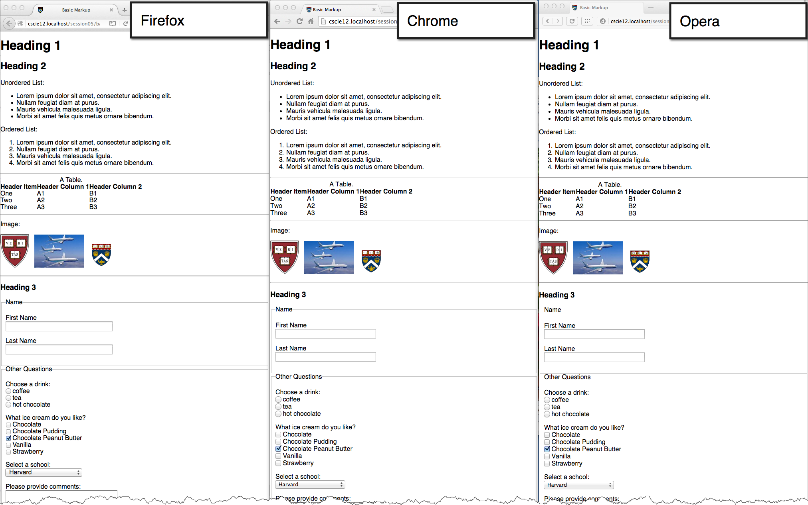

Harvard Summer School
CSCI S-12 Fundamentals of Web Site Development
| Summer 2020
◁ previous
Slide 10
|
next topic ▷
CSS Normalize
normalize.css project
normalize.css
HTML Demo Page
HTML Demo Page with normalize.css

◁ previous
Slide 10
|
next topic ▷